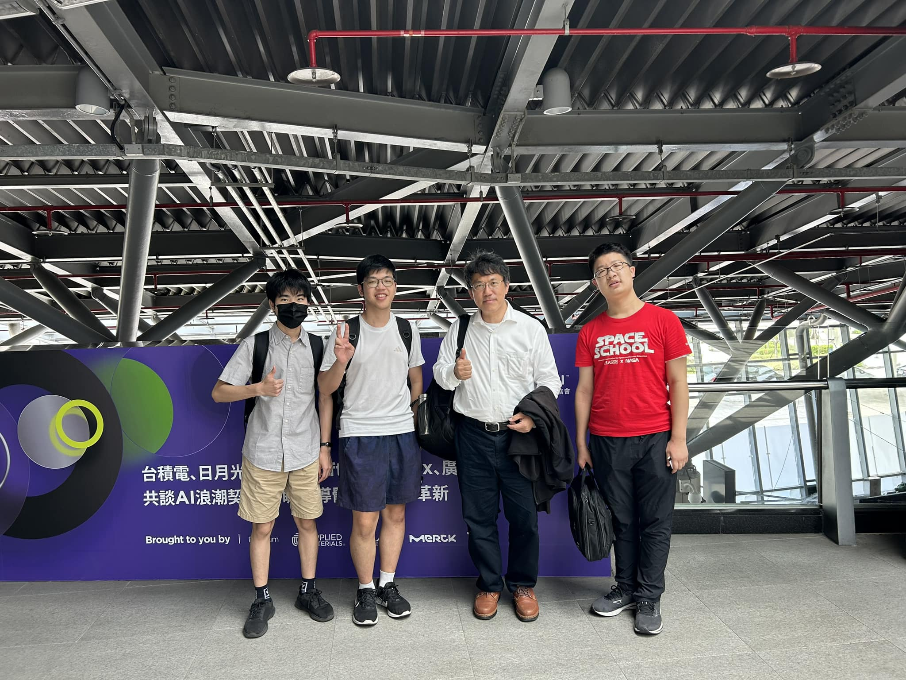
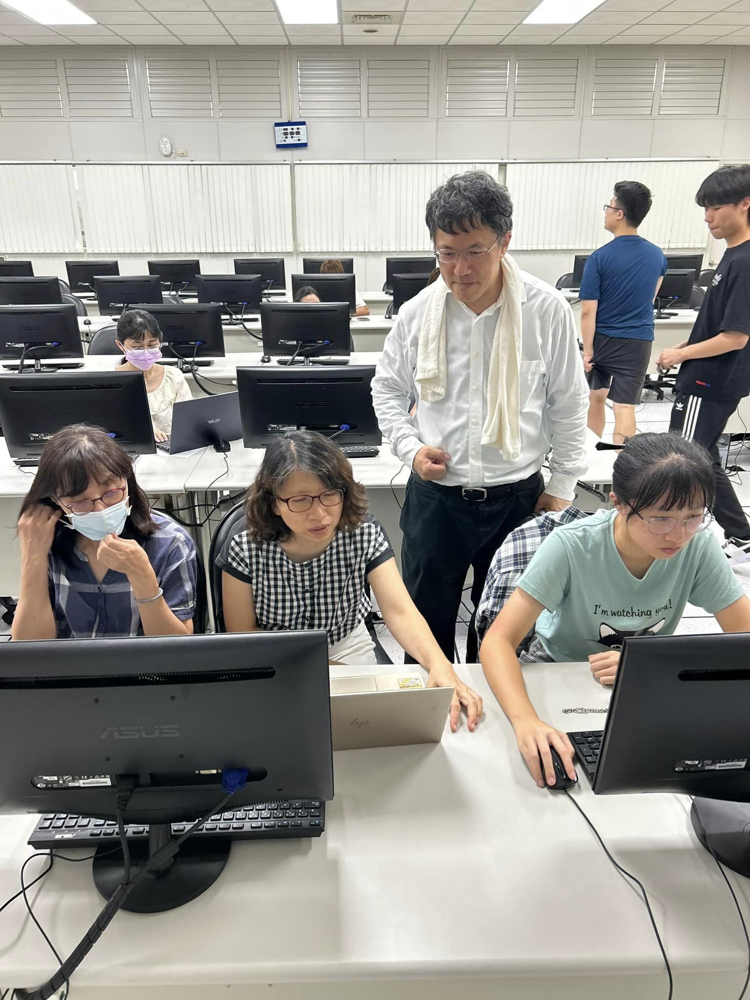
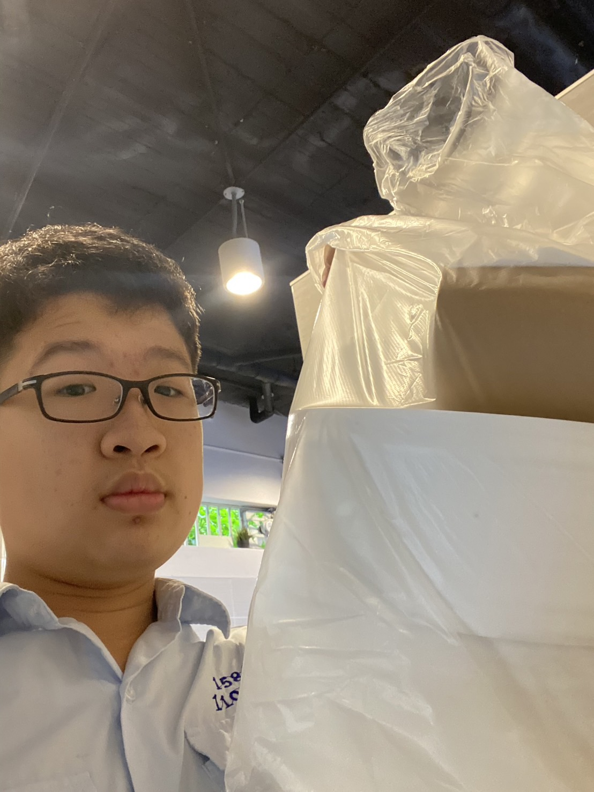
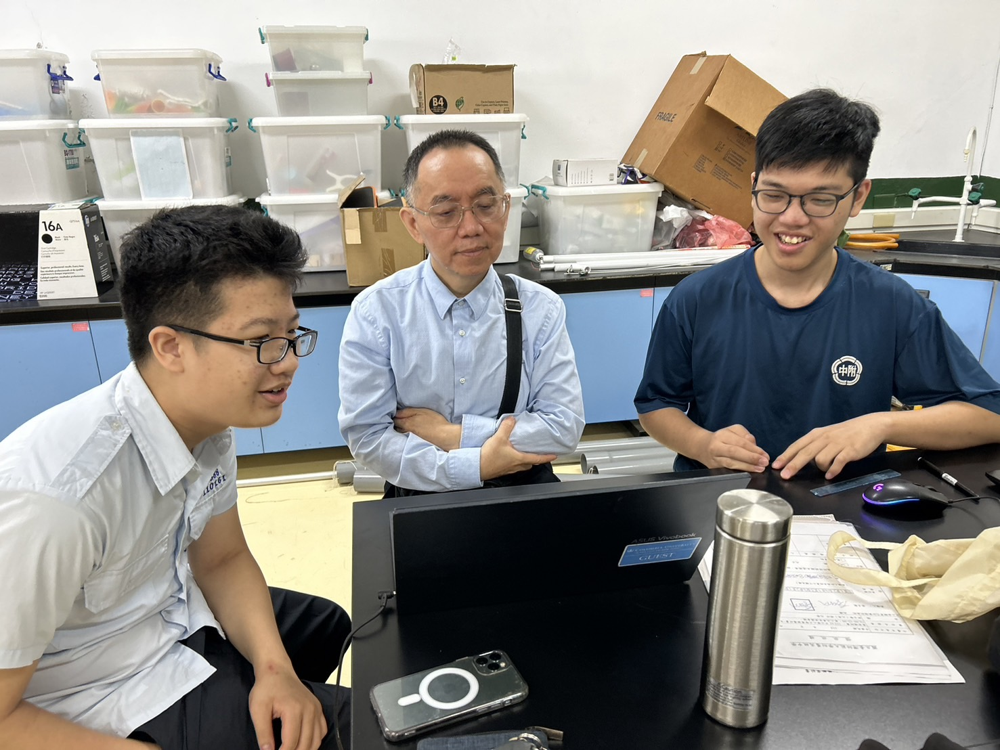

- Social Service as Teacher’s Assistant in AI courses held by Hsinchu County Government for the certified 30 teachers at middle schools and high schools,
Topics include introduction to AI, machine’s digital capability, machine learning, and automation.
 
- Social service at HSNU parent teacher conference: Scheduling coordination, operational tasks, and ushering of the conference
- HSNU Parents association social service: Coordinating the community public hygiene program (including maintenance of the public areas, such as hallways and bathrooms, etc.)
 